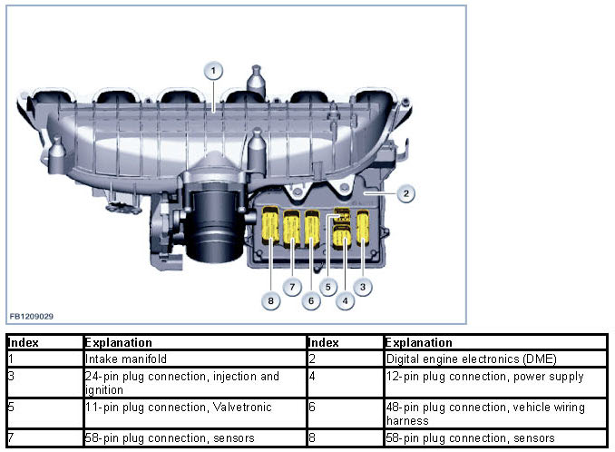
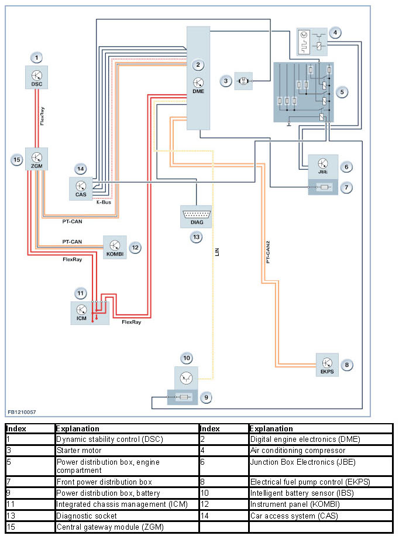

Engine Control System Interfaces
Engine Control System Interfaces
Engine control system interfaces
The Digital Engine Electronics (DME) requires many different signals from other control units for engine control.
NOTICE: Bus systems for communication.
The functional description for engine control system interfaces also includes a description of the bus systems that are used.
Brief component description
The following components for the interfaces of the engine control system are described:
- Digital Engine Electronics (DME).
Digital Motor Electronics
The Digital Engine Electronics (DME) are attached to the intake system close to the engine. This means the Digital Engine Electronics (DME) are cooled by the intake air. The design of the plug connections between the wiring harness and the DME digital engine electronics module ensures they remain sealed against water when the connectors are plugged in.
The DME digital engine electronics module furnishes the power to the sensors and actuators directly. The top side of the Digital Engine Electronics (DME) is simultaneously the lower section of the air intake system. There is a contour on the housing beside the intake pipe which assures optimum flow conditions into the intake system. The Digital Engine Electronics (DME) is the computing and switching centre of the engine control system. Sensors on the engine and vehicle deliver the input signals. The signals employed to control the actuators are calculated using the input signals and the specified setpoint values stored in the Digital Engine Electronics (DME) as well as the characteristic maps. The DME digital engine electronics module activates the actuators directly or via relays.
Two sensors are located on the DME digital engine electronics module's printed circuit board:
- 1 Temperature sensor
- 1 Ambient barometric pressure sensor.
The temperature sensor monitors the thermal condition of the components in the DME digital engine electronics system.
The ambient pressure is required for calculation of the mixture composition.
The following graphic shows the engine N55 as example.

In principle, 2 groups of bus systems are distinguished:
- Main bus systems: FlexRay, K-CAN, K-CAN2, MOST, PT-CAN and PT-CAN2
- Sub-bus systems: LIN, BSD, K-bus (body bus) and Local-CAN.
Main bus systems are responsible for the inter-system data exchange between the control units. This also includes the system functions 'diagnosis', 'programming' and 'coding'.
Sub-bus systems exchange data within a function group.
The communication of the Digital Engine Electronics (DME) with the other control units takes place via the following data buses:
- FlexRay
FlexRay enables reliable, real-time data transfer between the electrical and mechatronic components.
FlexRay contains a powerful protocol for data interchange with real-time capability. With a maximum data rate of 10 MBit/s per channel, the FlexRay is very fast. The central gateway module (ZGM) sets up the link between the various data buses and the FlexRay.
- PT-CAN (Powertrain CAN)
PT-CAN is the name of the data bus on the drive train. The data rate of the PT-CAN is 500 kBit/s and the PT-CAN is configured as a linear two-wire bus.
- PT-CAN2 (powertrain CAN2)
As of the F01, the PT-CAN is supplemented by the PT-CAN2. The data rate of the PT-CAN is also 500 kBit/s and the PT-CAN2 is configured as a linear two-wire bus.
- LIN bus (Local Interconnect Network bus)
The LIN bus is a standardized serial single-wire bus. The LIN bus supplements other data buses and it is used for communication between the different control units.
The LIN bus is used, for example, for the intelligent battery sensor (IBS) and the alternator.
The data rate of the LIN bus is 19.6 kBit/s.
- BSD (Bit-Serial Data interface)
The BSD networks the components of the drive unit electronics. The BSD is a bidirectional single-wire interface.
The data rate of the BSD is 9.6 kBit/s.
- K-bus (body bus)
The K-bus (body bus) networks the components of the general motor vehicle electrics, the information and communications systems and the safety system. The K-body bus is a bidirectional single-wire interface.
The data rate of the body bus is 9.6 kBit/s.
- Local-CAN
The Local-CAN is a bidirectional single-wire interface.
The Local-CAN is used, for example, for the nitrogen oxide sensor.
The data rate of the Local-CAN is 9.6 kBit/s.
System overview
The following illustration shows the system overview of the engine control system interfaces on the F10:

System functions
The following section describes the following system functions:
- Electronic immobilizer.
Electronic immobilizer
The electronic immobilizer is both an anti-theft system and start enable device. The electronic immobilizer uses modern encryption. Each vehicle is assigned a 128-bit code. This code is stored in a BMW database. This means that the code is known only to BMW. The code is programmed in the Car Access System (CAS) and the Digital Engine Electronics (DME) and is locked. When the code is in the control units, it can no longer be deleted or changed. This means that each control unit is assigned to a certain vehicle. The Car Access System (CAS) and the electronic immobilizer (EWS) mutually identify one another with the code and the same algorithm. If the identification data is correct, the Car Access System (CAS) activates the starter motor via a relay in the control unit. At the same time, the Car Access System (CAS) sends the Digital Engine Electronics (DME) a coded enable signal (random code) for the engine start. The Digital Engine Electronics (DME) only enable the engine start if a correct enable signal has arrived from the Car Access System (CAS). These operations may result in a slight delay in starting (up to half a second).
Notes for Service department
General notes
NOTICE: Replacement of distribution box in engine compartment only as a complete unit.
The power distribution box in the engine compartment (for example with engine N55) is only replaceable as a complete component. Moreover, the integrated fuses cannot be checked manually. Follow the instructions in the test modules.
We can assume no liability for printing errors or inaccuracies in this document and reserve the right to introduce technical modifications at any time.